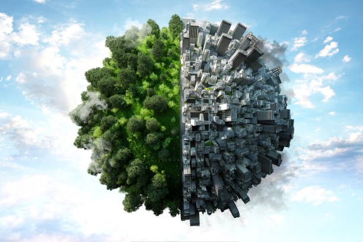

Há evidências científicas de que substâncias fabricadas pelo homem estão destruindo a camada de ozônio. Em 1977, cientistas britânicos detectaram pela primeira vez a existência de um buraco na camada de ozônio sobre a Antártida. Desde então, têm se acumulado registros de que a camada está se tornando mais fina em várias partes do mundo, especialmente nas regiões próximas do Pólo Sul e, recentemente, do Pólo Norte.
Diversas substâncias químicas acabam destruindo o ozônio quando reagem com ele. Tais substâncias contribuem também para o aquecimento do planeta, conhecido como efeito estufa. A lista negra dos produtos danosos à camada de ozônio inclui os óxidos nítricos e nitrosos expelidos pelos exaustores dos veículos e o CO2 produzido pela queima de combustíveis fósseis, como o carvão e o petróleo. Mas, em termos de efeitos destrutivos sobre a camada de ozônio, nada se compara ao grupo de gases chamado clorofluorcarbonos, os CFCs.
Depois de liberados no ar, os CFCs (usados como propelentes em aerossóis, como isolantes em equipamentos de refrigeração e para produzir materiais plásticos) levam cerca de oito anos para chegar à estratosfera onde, atingidos pela radiação ultravioleta, se desintegram e liberam cloro. Por sua vez, o cloro reage com o ozônio que, conseqüentemente, é transformado em oxigênio (O2). O problema é que o oxigênio não é capaz de proteger o planeta dos raios ultravioleta. Uma única molécula de CFC pode destruir 100 mil moléculas de ozônio.
A quebra dos gases CFCs é danosa ao processo natural de formação do ozônio. Quando um desses gases (CFCl3) se fragmenta, um átomo de cloro é liberado e reage com o ozônio. O resultado é a formação de uma molécula de oxigênio e de uma molécula de monóxido de cloro. Mais tarde, depois de uma série de reações, um outro átomo de cloro será liberado e voltará a novamente desencadear a destruição do ozônio.
Quais os problemas causados pelos raios ultravioleta?
Apesar de a camada de ozônio absorver a maior parte da radiação ultravioleta, uma pequena porção atinge a superfície da Terra. É essa radiação que acaba provocando o câncer de pele, que mata milhares de pessoas por ano em todo o mundo. A radiação ultravioleta afeta também o sistema imunológico, minando a resistência humana a doenças como herpes.
Os seres humanos não são os únicos atingidos pelos raios ultravioleta. Todos as formas de vida, inclusive plantas, podem ser debilitadas. Acredita-se que níveis mais altos da radiação podem diminuir a produção agrícola, o que reduziria a oferta de alimentos. A vida marinha também está seriamente ameaçada, especialmente o plâncton (plantas e animais microscópicos) que vive na superfície do mar. Esses organismos minúsculos estão na base da cadeia alimentar marinha e absorvem mais da metade das emissões de dióxido de carbono (CO2) do planeta.
O que é exatamente o buraco na camada de ozônio?
Uma série de fatores climáticos faz da estratosfera sobre a Antártida uma região especialmente suscetível à destruição do ozônio. Toda primavera, no Hemisfério Sul, aparece um buraco na camada de ozônio sobre o continente. Os cientistas observaram que o buraco vem crescendo e que seus efeitos têm se tornado mais evidentes. Médicos da região têm relatado uma ocorrência anormal de pessoas com alergias e problemas de pele e visão.
O Hemisfério Norte também é atingido: os Estados Unidos, a maior parte da Europa, o norte da China e o Japão já perderam 6% da proteção de ozônio. O Programa das Nações Unidas para o Meio Ambiente (PNUMA) calcula que cada 1% de perda da camada de ozônio cause 50 mil novos casos de câncer de pele e 100 mil novos casos de cegueira, causados por catarata, em todo o mundo.

A cooperação global é fundamental para enfrentar o aquecimento global. Acordos internacionais, como o Acordo de Paris, estabelecem metas e compromissos para reduzir as emissões, mas sua implementação efetiva requer a colaboração ativa de governos, empresas e indivíduos em todo o mundo.
A conscientização pública é um catalisador essencial para a mudança. Educar as pessoas sobre as causas e consequências do aquecimento global, promover a responsabilidade individual e incentivar escolhas de estilo de vida sustentáveis são elementos fundamentais para criar uma cultura de respeito ambiental e ação coletiva.
Enfrentar o aquecimento global é uma jornada desafiadora, mas é uma responsabilidade compartilhada por toda a humanidade. As decisões que tomamos hoje moldarão o futuro do nosso planeta. Assumir um compromisso real com práticas sustentáveis, apoiar iniciativas e exigir ações concretas são passos significativos na direção de um mundo mais equilibrado, resiliente e capaz de enfrentar os desafios das mudanças climáticas.
O aquecimento global, impulsionado pelas atividades humanas, emerge como uma crise ambiental que exige uma resposta urgente e coordenada. À medida que as concentrações de gases de efeito estufa continuam a aumentar na atmosfera, os impactos sobre o clima global tornam-se cada vez mais evidentes, ameaçando ecossistemas, comunidades e a própria estabilidade do planeta.
O aumento das temperaturas médias da Terra desencadeia uma cascata de efeitos, incluindo o derretimento de calotas polares, elevação do nível do mar, eventos climáticos extremos e alterações nos padrões de precipitação. Essas mudanças não apenas afetam o meio ambiente, mas também têm implicações diretas na segurança alimentar, na saúde pública e na estabilidade econômica.
Combater o aquecimento global requer uma abordagem holística. A transição para fontes de energia renovável é crucial para reduzir as emissões de gases de efeito estufa provenientes da queima de combustíveis fósseis. Além disso, estratégias de conservação e reflorestamento são essenciais para absorver o excesso de carbono na atmosfera e preservar a biodiversidade.